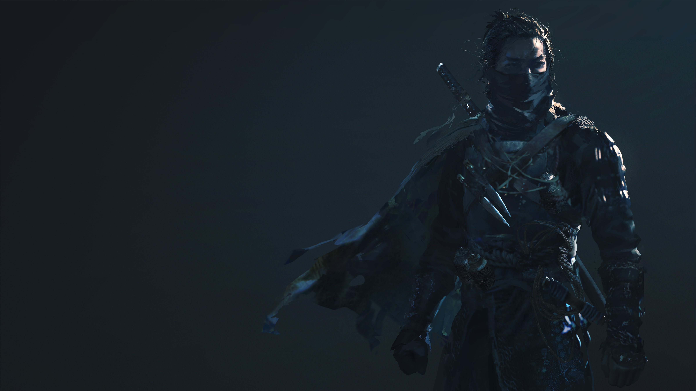
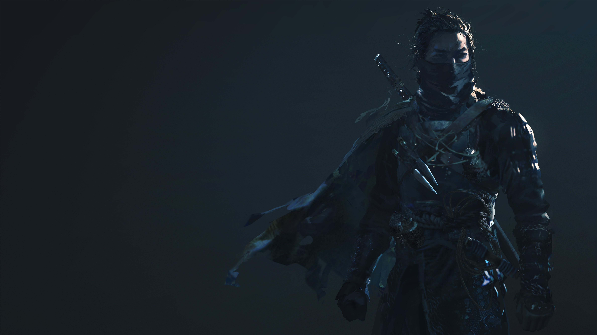

Arsenal
Becoming the most feared on the battlefield requires tremendous strength,and a weapon worthy enough of such strength.
Becoming the most feared on the battlefield requires tremendous strength,and a weapon worthy enough of such strength.
